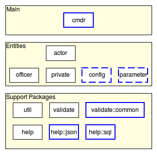
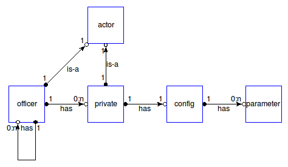
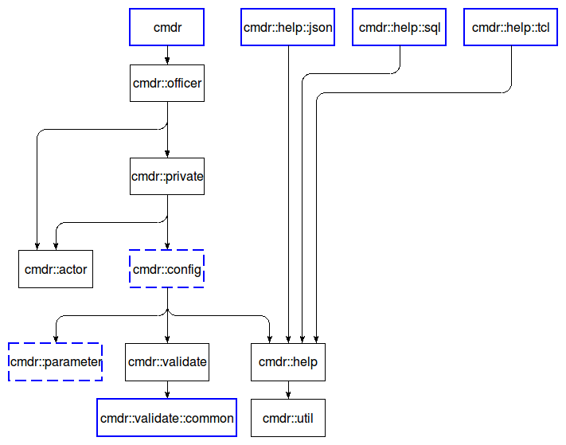

cmdr_development - Cmdr - The Developer's Guide
Welcome to the Cmdr project, written by Andreas Kupries.
For availability please read Cmdr - How To Get The Sources.
The audience of this document are anyone wishing to modify Cmdr in any way, shape, or form. This can be a maintainer fixing bugs, a developer adding functionality, or patching it to accommodate local cicumstances, etc.
Please read
first, if that was not done already. Here we assume that the sources are already available in a directory of your choice, that it is known how to build and install the project, and that all the necessary requisites are available.
Cmdr requires the following tools going beyond those needed for build and installation.
Processor for diagram-based figures. See package tklib.
Processor for doctools-based documentation files, i.e. the ".man" files under "doc/". See package tcllib.
This requirement is optional. If a Tcllib providing the package dtplite is installed then kettle will use the package in favor of the external application.
Cmdr (currently) does not have demonstrations, nor examples.
The directory structure of the sources is as explained below:
The main file of the kettle-based build-system.
Main directory for all documentation.
Based on the doctools package and tools provided by Tcllib.
Main directory for all diagrams and figures used by the documentation.
Based on the diagram package and tools provided by Tklib.
Compiled documentation (manpages and HTML). Part of the repository for
easy access from the repository's web interface (embedded documentation), and
quicker installation (no need to compile during the installation process itself).
Main directory for the test-suite.
Based on the tcltest package distributed with the Tcl core.
Package cmdr::actor.
Package cmdr.
Package cmdr::config.
Package cmdr::help.
Package cmdr::help::json.
Package cmdr::help::sql.
Package cmdr::officer.
Package cmdr::parameter.
Package cmdr::private.
Package cmdr::util.
Package cmdr::validate.
Package cmdr::validate::common.
Our build-system is based on kettle, as already explained in the Cmdr - The Installer's Guide. Beyond the targets useful for installation it also provides targets aiding developers and maintainers. These are:
% /path/to/cmdr/build.tcl validate-doc
% /path/to/cmdr/build.tcl doc
% /path/to/cmdr/build.tcl figures
The most basic execution of the test-suite is done with
% /path/to/cmdr/build.tcl test
When the test-suite reports issues with the framework use of the more extended form below is indicated, with a <stem> of your choice. This will generate a number of files whose name starts with the prefix "<stem>.". These will contain extended test logs, details about errors and failures, etc.
% /path/to/cmdr/build.tcl test --log <stem>
All packages in the framework belong to one of three layers, as shown below:

Note that:
Packages marked with a dashed blue border are public in parts, and private in parts.
Packages marked with an unbroken blue border are fully public.
The topmost layer contains only a single package, cmdr, which is the trivial entry point to the system.
The bottom layer contains the mainly internal utility packages. The exception is cmdr::validate::common, for use in bespoke validation types. See the document about Cmdr - Writing custom validation types for details.
The important pieces implementing the various entities are all in the middle layer. The relationship of these entities can be seen in the next diagram:

The dependencies between the packages are very straight-forward, following mostly directly out of the relationships shown above, plus the few where the utilities are imported. To reduce the complexity of the diagram below a few direct dependencies on cmdr::util were omitted where indirectly present through other dependencies (i.e. through cmdr::help):

Everything said in the public document Cmdr - Writing custom validation types applies to the standard validation types of the framework (as listed in Cmdr - Standard validation types for parameters) as well.
Everything said in the public document Cmdr - Writing custom help formats applies to the standard help formats of the framework (as listed in Cmdr - (Internal) Utilities for help text formatting and setup) as well.
The document Cmdr - Internals of command line completion describes the inner workings of the command line completion provided by the framework.
The framework reserves all blocks whose name begins with a star, i.e *, for its own use. Currently the following names are in use:
Publicly documented for users, this block is expected to contain parameter specification commands. These commands are automatically added to all privates found in the command hierarchy containing the block.
The details are explained by the description of command common in Cmdr - Officer Specification Language.
Publicly documented for users, this block is expected to contain a dictionary mapping from toplevel section/category names to an integer number to override the natural order of displaying these sections in the help.
The details are explained in section Format Notes of Cmdr - (Internal) Utilities for help text formatting and setup.
Publicly documented for users as read-only this block's value is managed by the framework. Set during the Dispatch phase it provides to access to the actual command name used to invoke a private.
See also section Execution of Cmdr - Runtime Processing Flow.
Publicly documented for users as read-only this block's value is managed by the framework. Not set until the first main- or mini-shell was active its value is boolean flag indicating if an interactive shell is currently active (true) or not (false, or not existing).
See also section Execution of Cmdr - Runtime Processing Flow.
Cmdr - The Developer's Guide
Both the package(s) and this documentation will undoubtedly contain bugs and other problems. Please report such at Cmdr Tickets.
Please also report any ideas you may have for enhancements of either package(s) and/or documentation.
arguments, command hierarchy, command line completion, command line handling, command tree, editing command line, help for command line, hierarchy of commands, interactive command shell, optional arguments, options, parameters, processing command line, tree of commands
Copyright © 2013 Andreas Kupries
Copyright © 2013 Documentation, Andreas Kupries